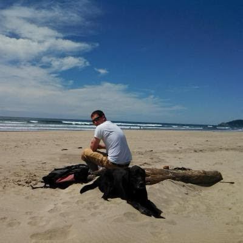

 I am originally from Montana, growing up in a tiny town of 200 people, before moving to Bozeman and attending Montana State University. I graduated with a degree in Geography and specialized in Geographic Information Systems (GIS) and Remote Sensing. I chose this field because I always loved maps and loved to travel. After graduation and some traveling, I ended up in Portland, Oregon, and got a job using remote sensing for classifying land cover. After several years at that job, I got itchy feet and decided that remote sensing wasn't what I wanted to continue doing. My wife and I decided to follow our desire to travel and left for 6 months, spending a month in Argentina, a month in Chile, and 4 months driving around the United States. Once we returned to Portland, I decided to find work in the GIS field, and ended up at Ecotrust working as a GIS Analyst. After 7 years, I knew that I didn't want to continue in the GIS world as a career either and decided to pursue my interest in software development, which led me to Epicodus. We are in the final day of our first week and it has been an incredible experience so far! Below, you can find out more information about what I have learned and worked on during this past week, plus more information on my decision to transition to software development as a career.